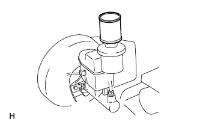
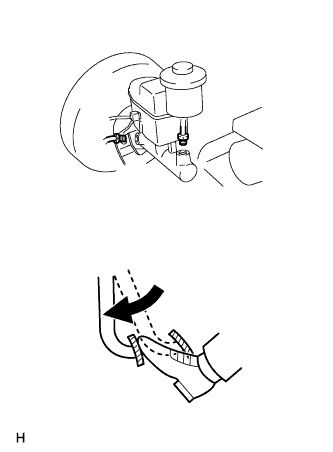
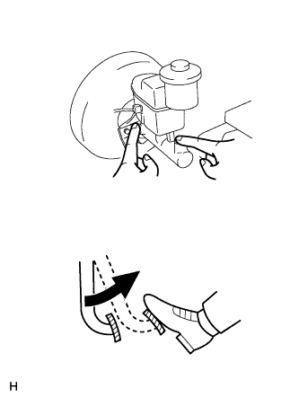
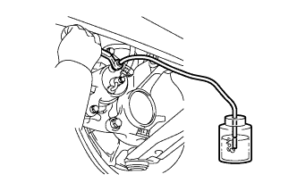
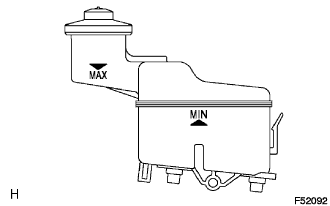

DẦU PHANH > XẢ KHÍ |
| 1. ĐỔ DẦU PHANH VÀO BÌNH CHỨA |
|  |
| 2. XẢ KHÍ KHỎI XI LANH PHANH CHÍNH |
|  |
Dùng SST, tháo 2 đường ống phanh ra khỏi xi lanh phanh chính.
Đạp từ từ bàn đạp phanh và giữ nó ở đó.
|  |
Bịt các lỗ bên ngoài bằng ngón tay của bạn và nhả bàn đạp phanh.
Lặp lại các bước 3 hoặc 4 hai lần.
Dùng SST, lắp 2 đường ống phanh vào xi lanh phanh chính.
| 3. XẢ KHÍ ĐƯỜNG ỐNG PHANH |
Tháo nắp nút xả khí.
|  |
Lắp ống nhựa vào nút xả khí.
Đạp bàn đạp phanh vài lần và sau đó nới lỏng nút xả khí với bàn đạp phanh đang được nhấn xuống.
Khi dầu ngừng chảy ra, hãy xiết ngay nút xả khí. Sau đó nhả bàn đạp.
Lặp lại 2 bước trên cho đến khi khí trong dầu phanh được xả hết.
Xiết chặt nút xả khí.
Lắp nắp.
Xả khí ra khỏi ống phanh cho từng bánh xe bằng cách lặp lại các quy trình trên.
| 4. KIỂM TRA MỨC DẦU PHANH TRONG BÌNH CHỨA |
|  |
Kiểm tra mức dầu và đổ thêm dầu phanh nếu cần.